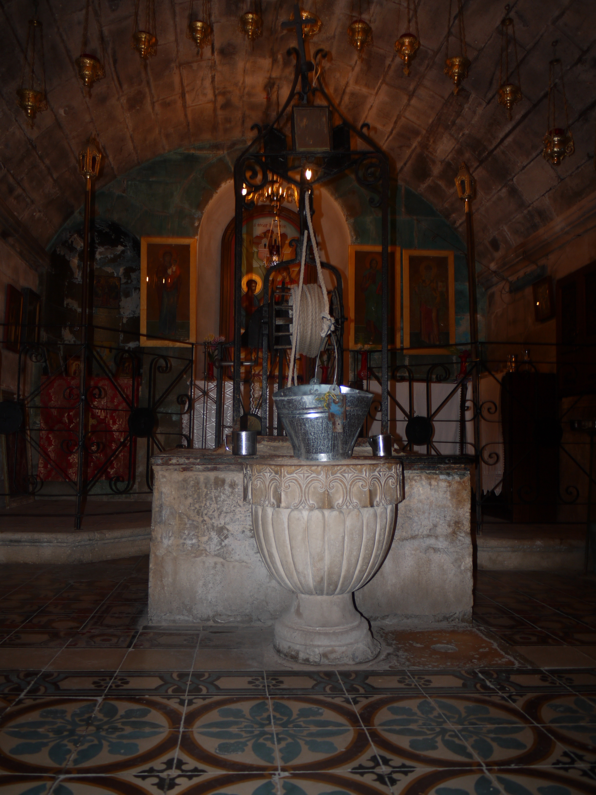

Jacob's Well

- Find Name
- Jacob's Well
- Description
- A deep well, about 41 m in its present form, under a Greek Orthodox church near Shechem, venerated since at least the 4th century AD as the well where Jesus spoke with the Samaritan woman (John 4). A cruciform Byzantine church stood over it by AD 384; the well was used for baptisms by AD 333 according to the Bordeaux Pilgrim. The present church is 20th-century, over Byzantine remains. The well is not named in the Old Testament: Genesis records Jacob buying land at Shechem and giving a parcel to Joseph, but no well dug by Jacob is mentioned there.
- Historical Period
- Roman–Byzantine (present well and church tradition)
- Evidence Class
- Disputed
- Interpretations
- DOUBT STATED: this entry rests on standing tradition, not excavation. The present well shaft is Roman-period construction, the church tradition begins in the 4th century, and a nearer village spring ('Ain 'Askar) was the ordinary water source for Sychar's women — a point already noted by 19th-century commentators. The identification is therefore plausible and ancient as tradition, but not archaeologically proven, and the well must not be presented as certainly Jacob's own digging or certainly the well of John 4.
- Alternative Names
- Well of Sychar; Bir Ya'qub
- Related Places
- Related Books
- Related People
- Scripture Illuminated
- Biblical Significance
- If this is the well of John 4, it is where Jesus first told someone plainly that He is the Messiah (John 4:26), and where 'living water' was offered to an outsider — a Samaritan woman — before any of it was offered in Jerusalem. That is why the tradition has been guarded for seventeen centuries, even though the archaeology cannot prove the identification.
- Artifact Date
- Roman period (present well shaft); Byzantine church 4th century AD
- Current Location
- In situ, crypt of the Greek Orthodox Church of Jacob's Well, Nablus, West Bank
- Date Discovered
- Tradition attested by the 4th century AD (Bordeaux Pilgrim, AD 333; church by AD 384)
- Discovery Location
- Near Shechem (Nablus), between Mount Gerizim and Mount Ebal, West Bank
- Timeline Era
- Life of Christ
Awaiting Review Not yet checked against scholarly sources. Treat its claims as provisional until this entry is reviewed. About verification
Last reviewed: not yet reviewed